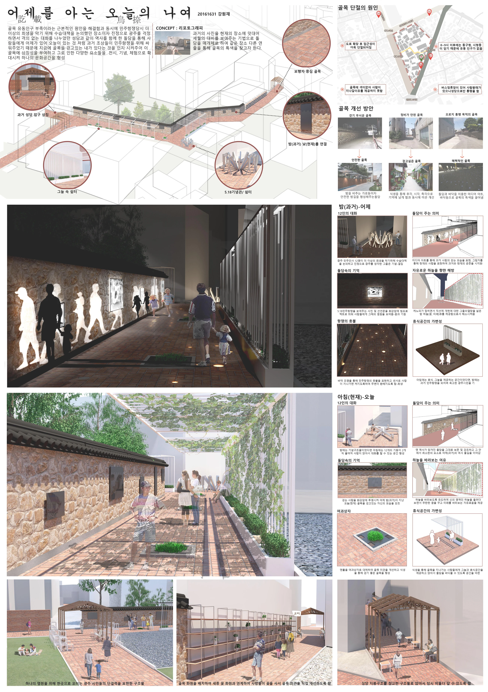
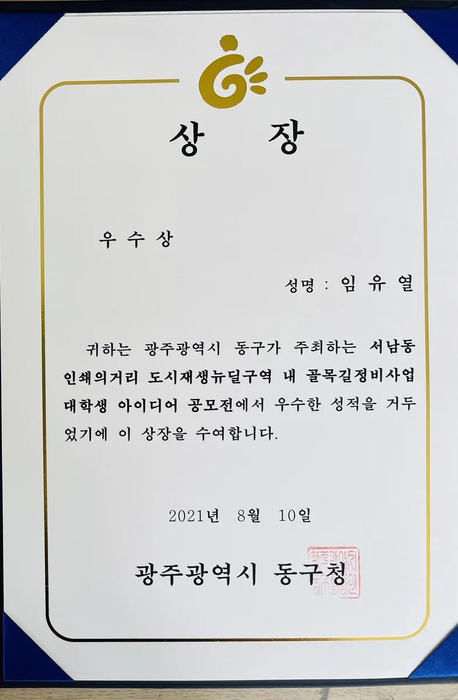

PAST & PRESENT IN PRINTING STREET
어제를 아는 오늘의 나여
옛 사진과 현재의 골목 풍경을 겹쳐 장소의 기억을 드러내는 골목길 재생 제안. 인쇄의거리 대학생 아이디어 공모전의 패널과 우수상 수상 기록입니다.
- YEAR / SEMESTER
- 1학년 1학기 · 2021
- COURSE
- 인쇄의거리 아이디어 공모전
- CONTRIBUTION
- 공모전 참여 · 우수상
- SITE / SUBJECT
- 광주 동구 서남동 인쇄의거리

THE IDEA
생각의 출발점
제출된 패널은 시간의 흔적을 지우기보다 지금의 골목에서 다시 읽는 방식을 제안합니다. 옛 사진을 현재 풍경에 겹치는 리포토그래피와 빛, 휴식 공간을 통해 과거와 오늘, 낮과 밤의 경험을 연결합니다.
- 01
기억을 드러내는 골목
돌담과 지역의 역사, 민주화의 기억을 재생의 단서로 삼았습니다. 과거 사진과 현재 공간을 함께 보여 주는 장치로 보행 중 장소의 이야기를 발견하도록 제안합니다.
- 02
낮과 밤을 연결하는 풍경
낮에는 골목의 재료와 사진을, 밤에는 조명과 실루엣을 경험하도록 구성합니다. 어두운 구간의 보행 경험과 머무를 이유를 함께 생각한 계획입니다.
- 03
걷기에서 머무르기로
가변적인 가림·전시 장치, 퍼골라와 앉을 곳, 녹지와 그늘을 배치해 통과 공간에 작은 휴식의 장면을 더합니다.
COMPETITION & AWARD
우수상.
서남동 인쇄의거리 도시재생뉴딜구역 내 골목길정비사업 대학생 아이디어 공모전
광주광역시 동구 · 2021.08.10
임유열 명의 상장 · 인쇄의거리 골목길 재생 아이디어
공모전 기록 모두 보기 ↗
상장 크게 보기 ↗PROCESS & OUTCOME
과정과 결과
사진을 누르면 크게 볼 수 있습니다.